Webspinners: Tales of Spider-Man (1998 - 2000)
| Comic Book | Release Date | Cover |
|---|---|---|
| Webspinners: Tales of Spider-Man #1 ...As Dreams Are Made On... Part One: Crash and Burn |  | |
| Webspinners: Tales of Spider-Man #2 As Dreams Are Made On Part Two: In The Nightmare Factory | 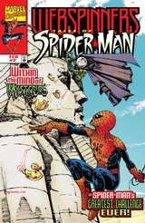 | |
| Webspinners: Tales of Spider-Man #3 As Dreams Are Made On Conclusion: Wake Up Call | 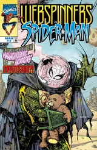 | |
| Webspinners: Tales of Spider-Man #4 Out of the Blue (Into the Fire) | 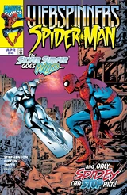 | |
| Webspinners: Tales of Spider-Man #5 Broken! | 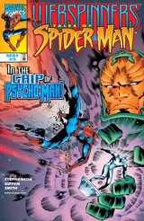 | |
| Webspinners: Tales of Spider-Man #6 With Everything to Lose | 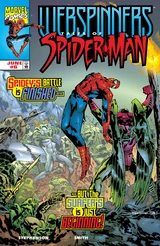 | |
| Webspinners: Tales of Spider-Man #7 The Bridge: Part 1 of 3 | 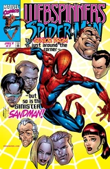 | |
| Webspinners: Tales of Spider-Man #8 The Bridge: Part 2 of 3 | 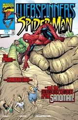 | |
| Webspinners: Tales of Spider-Man #9 The Bridge: Part 3 of 3 | 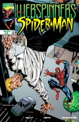 | |
| Webspinners: Tales of Spider-Man #10 The Show Must Go On | 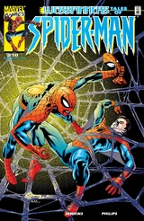 | |
| Webspinners: Tales of Spider-Man #11 Off the Deep End | 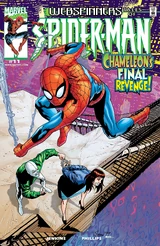 | |
| Webspinners: Tales of Spider-Man #12 Perchance to Dream... | 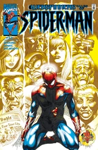 | |
| Webspinners: Tales of Spider-Man #13 The Time Before: Part 1 of 2 | 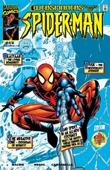 | |
| Webspinners: Tales of Spider-Man #14 The Time Before: Part 2 of 2 | 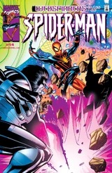 | |
| Webspinners: Tales of Spider-Man #15 Blackout: Part 1 of 2 | 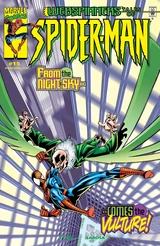 | |
| Webspinners: Tales of Spider-Man #16 Blackout: Part 2 of 2 | 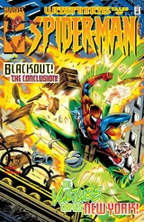 | |
| Webspinners: Tales of Spider-Man #17 Hero of the People: Part 1 of 2 | 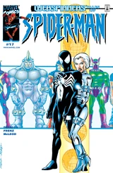 | |
| Webspinners: Tales of Spider-Man #18 Hero of the People Part 2 | 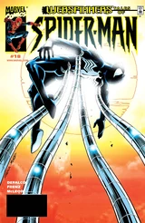 |